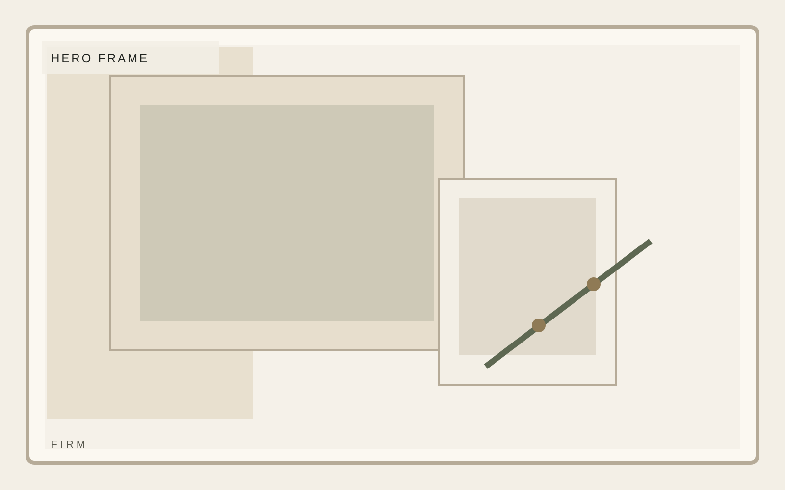
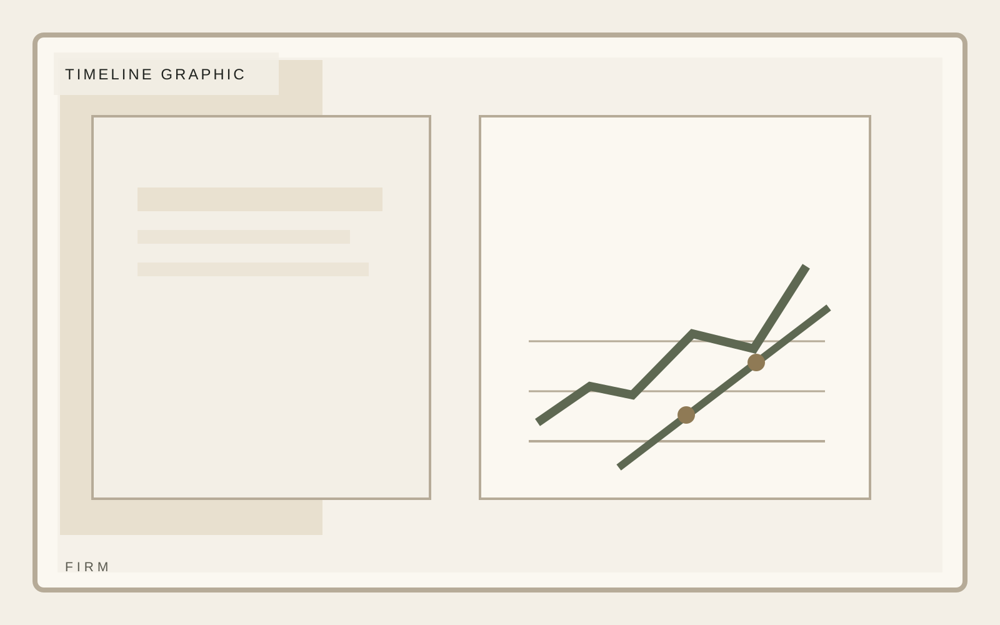

Institutional investment
An institutional posture without institutional bloat.
A composed private investment platform focused on durable middle-market businesses, disciplined underwriting, and practical value creation. A firm page should make posture visible before a single transaction is discussed.
Focus
North American middle market
Hold posture
3 to 7 year horizon
Approach
Operator-led value creation

Institutional investment
Positioning
Firm positioning is where the language must tighten. This section should explain market posture, geography, and deal judgment without sounding inflated.
Selective mandate
Operator context
Calm reporting

Institutional investment
History
History should feel deliberate and quiet. Present a real progression of operating maturity rather than a startup-style origin story.
Selective mandate
Operator context
Calm reporting
Institutional investment
Operating Principles
Operating principles should read like internal standards made public: crisp, selective, and concrete enough to imply a real decision-making culture.
- Clear position
- Structured proof
- Strong pacing
- Deliberate close
Institutional investment
Team
Northline uses team to establish credibility through structure, pacing, and real information density rather than decorative startup shortcuts. This firm page stays consistent with the template system while giving this section its own visual weight.
Avery Lane
Managing Partner
Jordan Pike
Operating Principal
Mina Sol
Portfolio Strategy